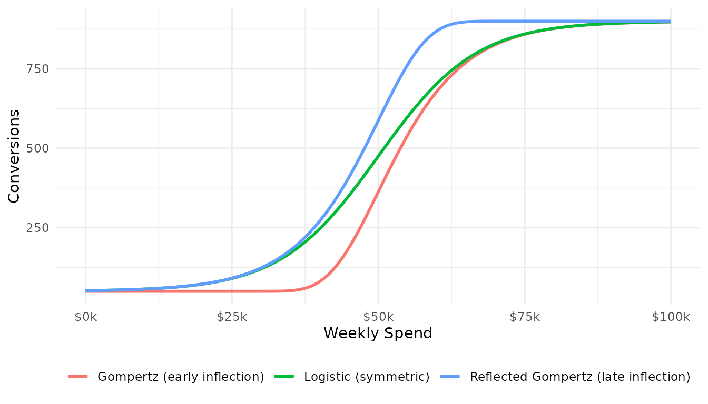
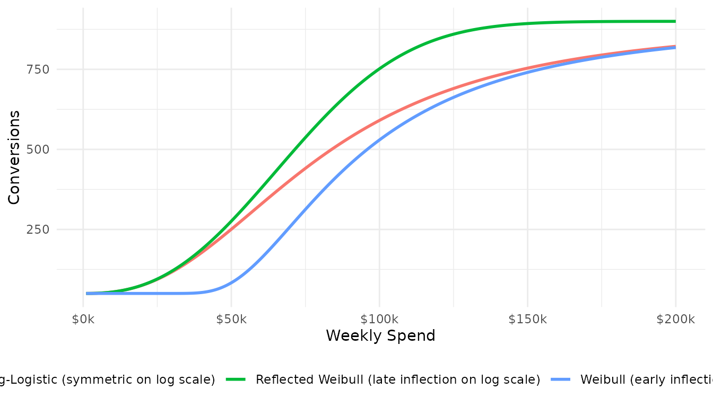
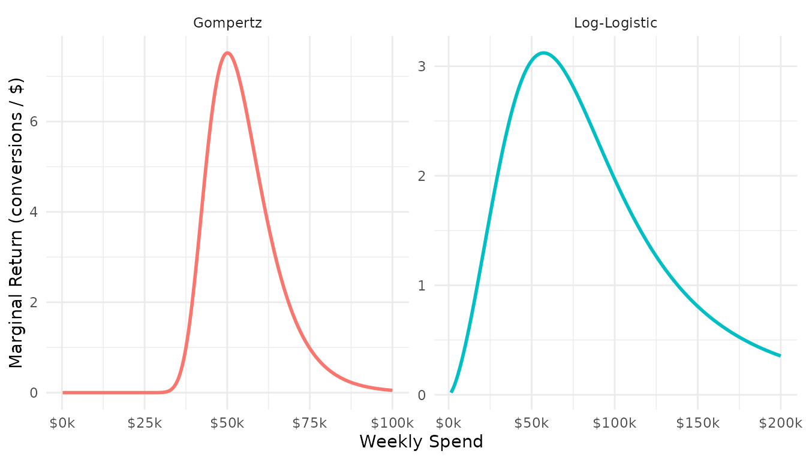
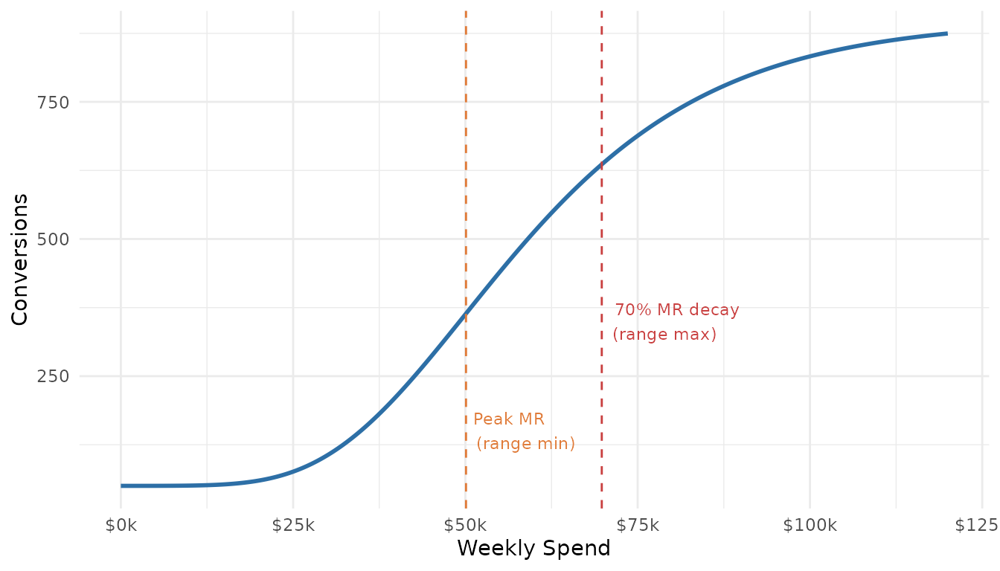
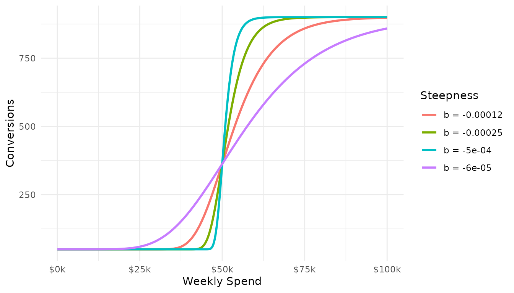
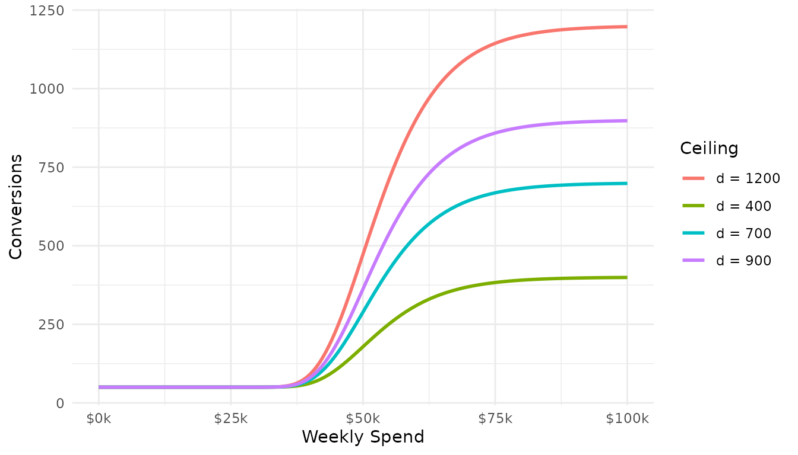
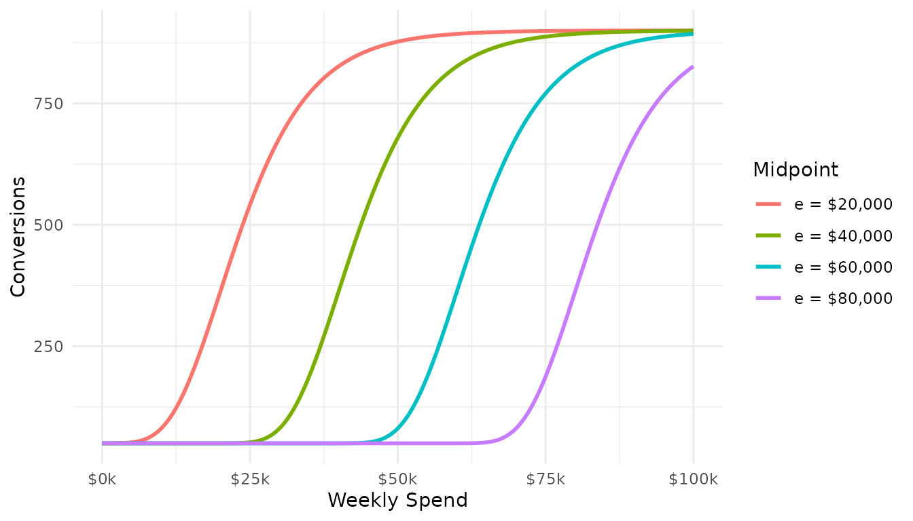
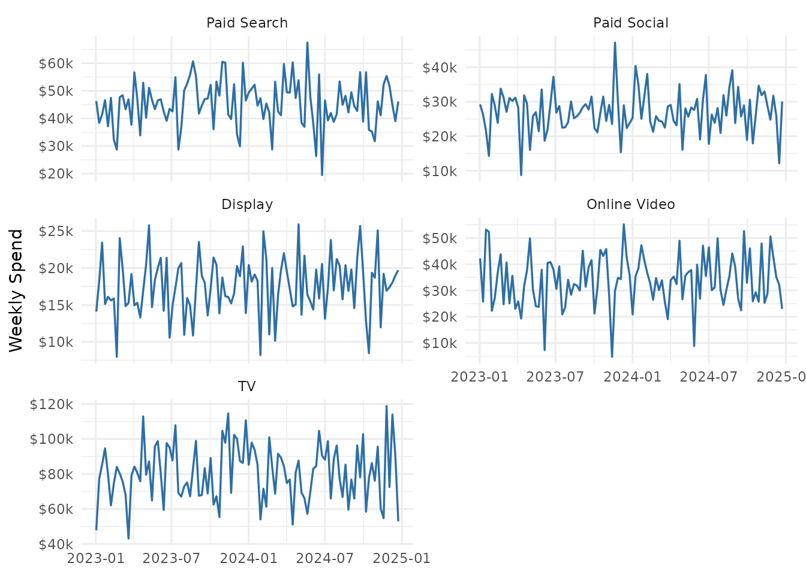

Response Curve Theory and Data Requirements
response_curve_theory.RmdThe Saturation Problem
Media channels do not deliver returns in proportion to spend. The first dollar spent on a channel is typically the most efficient — it reaches the most responsive audience, captures the highest-intent search queries, or occupies the cheapest inventory. As spend increases, each additional dollar reaches progressively less responsive audiences, drives incrementally smaller lifts, and encounters diminishing returns.
This behaviour is well-described by an S-shaped saturation curve: response rises steeply at first, passes through an inflection point, and gradually levels off toward an asymptotic ceiling. The shape encodes two important economic realities:
- Diminishing marginal returns — the incremental KPI generated by an additional dollar of spend falls as total spend grows.
- A biological or capacity ceiling — there are only so many consumers in the market, only so much demand to capture.
Linear models cannot represent either property. A response curve model fits a nonlinear, parametric relationship between spend and KPI that captures both.
A Common Mathematical Language: The Four-Parameter Family
All six response curves in mrmopt share the same four
parameters, giving them a unified interpretation regardless of curve
type:
| Parameter | Name | Interpretation |
|---|---|---|
| b | Steepness | Controls how sharply the curve rises. Always negative. |
| c | Floor | Lower asymptote — the baseline KPI at zero spend. |
| d | Ceiling | Upper asymptote — the maximum achievable KPI. |
| e | Midpoint | The spend level at the inflection point of the curve. |
The range of the curve — its total vertical travel —
is
.
The floor c is rarely exactly zero in practice; it can
absorb baseline effects or organic response that occurs even without
paid media.
The steepness parameter b governs the transition speed
between floor and ceiling. A very negative b produces a
near step-function: nearly all of the response is achieved within a
narrow spend band. A b closer to zero produces a slow,
gradual rise.
Symmetry, Asymmetry, and the Six Curve Families
The six curves divide naturally into two groups based on where the inflection point sits relative to the full curve range, and whether the transition happens on a linear or logarithmic spend scale.
Group 1: Linear-Scale Curves
These curves are defined in terms of raw spend
.
Their inflection point — the spend level where the curve changes from
accelerating to decelerating — is the parameter e
directly.
Logistic (Symmetric)
The logistic curve is symmetric around its
inflection point: the curve rises at the same rate on either side of
e. At
,
the response is exactly at the midpoint of the range,
.
Gompertz (Asymmetric — early inflection)
The Gompertz curve is asymmetric: its inflection point occurs at a lower response level than the midpoint of the range. Specifically, at , the curve sits at — roughly 37% of the way from floor to ceiling. This means the curve rises quickly early and then flattens out gradually, spending more of its range in the upper plateau than the lower ramp.
In media, this shape is often realistic: audiences are captured relatively quickly at moderate spend levels, and the long tail of incremental reach is expensive. The Gompertz’s long upper tail models this well.
Reflected Gompertz (Asymmetric — late inflection)
The reflected Gompertz mirrors the standard form, placing the inflection point at approximately 63% of the range rather than 37%. It rises slowly at first and accelerates before flattening — a shape that can represent channels where significant investment is required before meaningful response is generated (e.g., brand-building channels with long lags).
x <- seq(0, 100000, length.out = 500)
curves_linear <- bind_rows(
tibble(x = x, y = mrmopt:::rm_Logistic(x, b = -0.00012, c = 50, d = 900, e = 50000),
type = "Logistic (symmetric)"),
tibble(x = x, y = mrmopt:::rm_Gompertz(x, b = -0.00012, c = 50, d = 900, e = 50000),
type = "Gompertz (early inflection)"),
tibble(x = x, y = mrmopt:::rm_GompertzRef(x, b = -0.00012, c = 50, d = 900, e = 50000),
type = "Reflected Gompertz (late inflection)")
)
ggplot(curves_linear, aes(x = x, y = y, colour = type)) +
geom_line(linewidth = 1) +
scale_x_continuous(labels = scales::dollar_format(scale = 1e-3, suffix = "k")) +
labs(x = "Weekly Spend", y = "Conversions", colour = NULL) +
theme_minimal() +
theme(legend.position = "bottom")
The three linear-scale curves with identical parameters. The Gompertz inflects earlier (lower spend) than the logistic; the reflected Gompertz inflects later.
Group 2: Log-Scale Curves
These curves replace raw spend
with
,
so the inflection point and transition speed are expressed on a
multiplicative scale. The parameter e is now the spend
level at the inflection point (not a log-transformed value), but the
shape of the curve is governed by proportional changes in spend rather
than absolute ones.
Practical consequence: log-scale curves have monotonically decreasing marginal returns from the first dollar — there is no initial accelerating phase and no interior efficiency peak in the marginal return curve. This makes them appropriate when diminishing returns set in immediately, before the observed spend range.
Log-Logistic
The log-logistic is symmetric on the log scale: at
,
response is at the midpoint
.
Doubling spend from e/2 to e produces the same
lift as doubling from e to 2e.
Weibull
The Weibull is the log-scale analogue of the Gompertz: asymmetric, with an early inflection. It models channels where significant response is captured at relatively low spend levels on a proportional scale.
Reflected Weibull
The log-scale analogue of the reflected Gompertz — a slow early rise with a late inflection on the log scale.
x_log <- seq(1000, 200000, length.out = 500)
curves_log <- bind_rows(
tibble(x = x_log,
y = mrmopt:::rm_LogLogistic(x_log, b = -2.5, c = 50, d = 900, e = 80000),
type = "Log-Logistic (symmetric on log scale)"),
tibble(x = x_log,
y = mrmopt:::rm_Weibull(x_log, b = -2.5, c = 50, d = 900, e = 80000),
type = "Weibull (early inflection on log scale)"),
tibble(x = x_log,
y = mrmopt:::rm_WeibullRef(x_log, b = -2.5, c = 50, d = 900, e = 80000),
type = "Reflected Weibull (late inflection on log scale)")
)
ggplot(curves_log, aes(x = x, y = y, colour = type)) +
geom_line(linewidth = 1) +
scale_x_continuous(labels = scales::dollar_format(scale = 1e-3, suffix = "k")) +
labs(x = "Weekly Spend", y = "Conversions", colour = NULL) +
theme_minimal() +
theme(legend.position = "bottom")
Log-scale curves evaluated over the same spend range. All three have strictly decreasing marginal returns; only their asymmetry differs.
Mathematical Properties Relevant to Media Planning
Marginal Return
The marginal return (MR) is the derivative of the response curve with respect to spend — the incremental KPI generated by the next dollar of spend. It is the most operationally important quantity in media planning, because it governs the efficiency of incremental investment.
For linear-scale curves (logistic, Gompertz, reflected Gompertz), the marginal return curve itself has an interior maximum: there is a spend level at which the marginal return is highest. Below that level, each additional dollar is more efficient than the last (the accelerating phase). Above it, each dollar is less efficient (the diminishing returns phase). The spend at peak MR defines the lower bound of the efficient investment range.
For log-scale curves, marginal return is strictly decreasing from the
first dollar. There is no interior peak — efficiency is always highest
at the lowest observed spend. This changes how the efficient range is
defined: rather than anchoring to a MR peak, mrmopt anchors
range bounds to the MR at current observed spend.
delta <- 1
mr_gompertz <- diff(mrmopt:::rm_Gompertz(x, b = -0.00012, c = 50, d = 900, e = 50000)) / delta
mr_loglogistic <- diff(mrmopt:::rm_LogLogistic(x_log, b = -2.5, c = 50, d = 900, e = 80000)) / delta
mr_df <- bind_rows(
tibble(x = x[-1], mr = mr_gompertz, type = "Gompertz"),
tibble(x = x_log[-1], mr = mr_loglogistic, type = "Log-Logistic")
)
ggplot(mr_df, aes(x = x, y = mr, colour = type)) +
geom_line(linewidth = 1) +
scale_x_continuous(labels = scales::dollar_format(scale = 1e-3, suffix = "k")) +
labs(x = "Weekly Spend", y = "Marginal Return (conversions / $)", colour = NULL) +
facet_wrap(~type, scales = "free") +
theme_minimal() +
theme(legend.position = "none")
Marginal return curves for a Gompertz and a Log-Logistic curve. The Gompertz has a clear efficiency peak; the Log-Logistic declines monotonically.
Asymptotes and the Ceiling
The ceiling parameter d is a theoretical
maximum — the KPI the channel would approach with unlimited
spend. In practice, budgets rarely get close to this ceiling, and
posterior uncertainty around d tends to be high unless data
extends into the flat upper region of the curve.
This matters for prior specification: the ceiling prior should reflect domain knowledge about how much response is plausibly achievable, not be left entirely unconstrained. An unconstrained ceiling can allow the posterior to place the inflection point far outside the data range, producing a nearly linear fit that looks good in-sample but extrapolates poorly.
The Efficient Operating Range
Three spend levels partition the curve into interpretable zones:
- Range min (peak MR): The spend level where each dollar is most efficient. Spending below this level means leaving efficiency on the table.
- Range peak (peak AR): The spend level where total return per dollar (absolute return) is maximised — the single most efficient operating point.
- Range max (MR decay threshold): The spend level where marginal return has declined to a specified fraction of its peak (default 70%). Beyond this, diminishing returns accelerate meaningfully.
x_range <- seq(0, 120000, length.out = 1000)
y_gompertz <- mrmopt:::rm_Gompertz(x_range, b = -0.00012, c = 50, d = 900, e = 50000)
mr_g <- c(NA, diff(y_gompertz))
peak_mr_x <- x_range[which.max(mr_g)]
peak_ar_x <- x_range[which.max(y_gompertz / x_range)]
decay_mr <- 0.7 * max(mr_g, na.rm = TRUE)
decay_x <- x_range[which(mr_g <= decay_mr & x_range > peak_mr_x)[1]]
tibble(x = x_range, y = y_gompertz) |>
ggplot(aes(x, y)) +
geom_line(linewidth = 1, colour = "#2d6fa6") +
geom_vline(xintercept = peak_mr_x, linetype = "dashed", colour = "#e07b39") +
geom_vline(xintercept = peak_ar_x, linetype = "dashed", colour = "#3aa36e") +
geom_vline(xintercept = decay_x, linetype = "dashed", colour = "#c94040") +
annotate("text", x = peak_mr_x, y = 150, label = "Peak MR\n(range min)",
hjust = -0.1, size = 3, colour = "#e07b39") +
annotate("text", x = peak_ar_x, y = 250, label = "Peak AR\n(range peak)",
hjust = -0.1, size = 3, colour = "#3aa36e") +
annotate("text", x = decay_x, y = 350, label = "70% MR decay\n(range max)",
hjust = -0.1, size = 3, colour = "#c94040") +
scale_x_continuous(labels = scales::dollar_format(scale = 1e-3, suffix = "k")) +
labs(x = "Weekly Spend", y = "Conversions") +
theme_minimal()
A Gompertz curve annotated with the three operating range points.
How Parameters Shape the Curve
Understanding how each parameter changes the curve shape helps with prior specification and interpreting fitted models.
Steepness (b)
b controls the transition speed. More negative values
produce a sharper inflection; values closer to zero produce a slower,
more gradual rise.
b_vals <- c(-0.00006, -0.00012, -0.00025, -0.0005)
map_dfr(b_vals, ~ tibble(
x = x,
y = mrmopt:::rm_Gompertz(x, b = .x, c = 50, d = 900, e = 50000),
b = paste0("b = ", .x)
)) |>
ggplot(aes(x, y, colour = b)) +
geom_line(linewidth = 1) +
scale_x_continuous(labels = scales::dollar_format(scale = 1e-3, suffix = "k")) +
labs(x = "Weekly Spend", y = "Conversions", colour = "Steepness") +
theme_minimal()
Effect of steepness (b) on the Gompertz curve. All other parameters held constant.
Floor and Ceiling (c, d)
c shifts the entire curve up or down; d
expands or contracts the total range. Their difference
is the total achievable lift attributable to paid media.
d_vals <- c(400, 700, 900, 1200)
map_dfr(d_vals, ~ tibble(
x = x,
y = mrmopt:::rm_Gompertz(x, b = -0.00012, c = 50, d = .x, e = 50000),
d = paste0("d = ", .x)
)) |>
ggplot(aes(x, y, colour = d)) +
geom_line(linewidth = 1) +
scale_x_continuous(labels = scales::dollar_format(scale = 1e-3, suffix = "k")) +
labs(x = "Weekly Spend", y = "Conversions", colour = "Ceiling") +
theme_minimal()
Effect of ceiling (d) on the Gompertz curve. Floor held at c = 50.
Midpoint (e)
e slides the curve horizontally along the spend axis. A
higher e means the inflection point — and therefore the
efficient operating range — occurs at higher spend levels.
e_vals <- c(20000, 40000, 60000, 80000)
map_dfr(e_vals, ~ tibble(
x = x,
y = mrmopt:::rm_Gompertz(x, b = -0.00012, c = 50, d = 900, e = .x),
e = paste0("e = $", scales::comma(.x))
)) |>
mutate(e = factor(e, levels = paste0("e = $", scales::comma(e_vals)))) |>
ggplot(aes(x, y, colour = e)) +
geom_line(linewidth = 1) +
scale_x_continuous(labels = scales::dollar_format(scale = 1e-3, suffix = "k")) +
labs(x = "Weekly Spend", y = "Conversions", colour = "Midpoint") +
theme_minimal()
Effect of midpoint (e) on the Gompertz curve. The inflection point shifts right as e increases.
Choosing a Curve Type
No curve type is universally correct. The choice depends on the expected shape of diminishing returns for the channel and what the data can support.
| Curve | Inflection | Log scale? | When to consider |
|---|---|---|---|
| Gompertz | Early (~37%) | No | Most digital channels; quick saturation after moderate spend |
| Logistic | Middle (50%) | No | Channels with symmetric response around a natural midpoint |
| Reflected Gompertz | Late (~63%) | No | Brand-building or awareness channels with slow early response |
| Log-Logistic | Middle (log scale) | Yes | TV, OOH; proportional spend changes drive proportional response |
| Weibull | Early (log scale) | Yes | High-reach channels that saturate quickly on a proportional basis |
| Reflected Weibull | Late (log scale) | Yes | Channels requiring sustained investment before response builds |
On model selection: rather than selecting a single
curve type a priori, mrmopt supports fitting multiple types
and comparing them using Bayes R² and posterior predictive checks. See
the Model Comparison & Diagnostics vignette for guidance on
this workflow.
Log-scale curves require that spend is strictly positive in all
observed weeks. If your data contains zero-spend weeks,
mrmopt can inject a small offset automatically, but this
should be reviewed — a channel with true zero-spend weeks may be better
modelled with a linear-scale curve.
Data Requirements
A response curve model is only as good as the data used to fit it. There are three fundamental requirements.
1. Spend Variation
The most important requirement. The model learns the shape of the saturation curve by observing how response changes as spend changes. If spend is nearly constant across all observed weeks, the data cannot identify the curve — all parameter combinations that pass through that narrow spend band are equally consistent with the data.
A practical minimum is a spend range spanning at least one-half to one order of magnitude (e.g., lowest week no more than 50% of the highest week). Greater variation provides more information and reduces posterior uncertainty.
data(mrmopt_data)
ggplot(mrmopt_data, aes(x = week, y = spend)) +
geom_line(colour = "#2d6fa6", linewidth = 0.6) +
facet_wrap(~channel, scales = "free_y", ncol = 2) +
scale_y_continuous(labels = scales::dollar_format(scale = 1e-3, suffix = "k")) +
labs(x = NULL, y = "Weekly Spend") +
theme_minimal()
Spend variation in the mrmopt_data example dataset. Adequate variation is present across all channels.
2. Series Length
Fitting a Bayesian nonlinear model requires enough observations to constrain four parameters. As a rough guide:
- Minimum: ~52 weeks (one year). Below this, posteriors will be wide and sensitive to prior choice.
- Recommended: 104 weeks (two years) or more.
- Longer is better — but only if the underlying relationship is stable across the entire period. Two years of data from a channel that changed its creative strategy or targeting mid-period may be worse than one year of stable data.
3. Structural Stability
The model assumes a single, stable response curve across the entire observed period. Structural breaks — a major change in audience targeting, a shift in channel strategy, a platform algorithm change — violate this assumption. Fitting through a break produces a curve that represents neither period well.
If breaks are suspected, fit separate models to each sub-period. The
date_range metadata stored on each fitted model (accessible
as fit$date_range) makes it straightforward to compare
models across periods using mrms_plot_compare().
A note on collinearity
If spend across channels tends to move together — for example, budgets are raised or cut across the portfolio simultaneously — it becomes difficult to attribute response to individual channels. This is a media mix model problem rather than a response curve problem, but it affects how reliably a single-channel response curve reflects the true channel effect. Residual correlation across channels after fitting is a useful diagnostic signal.
Summary
The six response curves in mrmopt share a unified
four-parameter structure. The key distinctions are:
- Symmetry: Logistic and Log-Logistic are symmetric around their inflection point; the Gompertz family is asymmetric.
- Scale: Linear-scale curves (Logistic, Gompertz, Reflected Gompertz) have an interior marginal return peak; log-scale curves (Log-Logistic, Weibull, Reflected Weibull) have monotonically decreasing marginal returns.
- Inflection timing: Within each scale group, the standard, Gompertz, and reflected Gompertz variants place the inflection at 50%, ~37%, and ~63% of the response range respectively.
Fitting begins with fit_response(). The next vignette
covers the full fitting and analysis workflow using a realistic
simulated dataset.